来源：https://ai4b4zchjgk.feishu.cn/docx/HaPadfTp0o8GNxxS5EkcSf7Xn6d
大家好，我是tiger老虎，
7年创业者，985商科，前企业管理咨询师，反射角台球创始人；
与生财的大多数大佬不太一样的是，年纪轻轻的我，就扎进了实体的路。在我小时候家里就开过超市，烧烤店，幼儿园，玻璃厂等等。在大学里面，搞过家教，驾校，校园活动承接。在毕业的第二年，我就开了自己的第一家酒店，现在也是自己的被动收入。
由于老家正好是全国台球厅生产基地德州，所以早早的了解到了无人自助台球厅，现在已经开了5家。也已经帮几十个朋友开了自助球厅，目前all in自助台球。
还差1个月就进入生财1整年了，感谢生财，带我开眼；自助球厅这个项目可能少有人关注，但是他却在一年半的时间全年开了2万家，为了能够讲到开店的更多细节，下面把我以第一视角，把刚开始开店的经历分享给大家。
由于前面工作经历养成的习惯，所以第一步先去查了行研，找完之后还是一个字：绝。
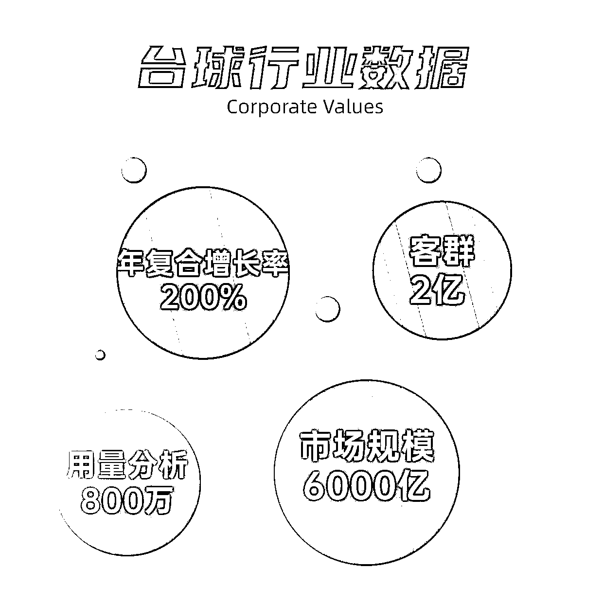
台球，中国现在已经从1亿的用户，现在上升为了2亿用户！江湖人称“中国第一大运动”！
相信大家不管打不打台球，都能感受到了台球赛道这两年线上和线下的流量
线上，台球这个事情的流量大的吓人，抖音上千万粉的台球博主都有好几个，百万的更多。
可能很多的台球小白，都会震惊了，妥妥异常值。
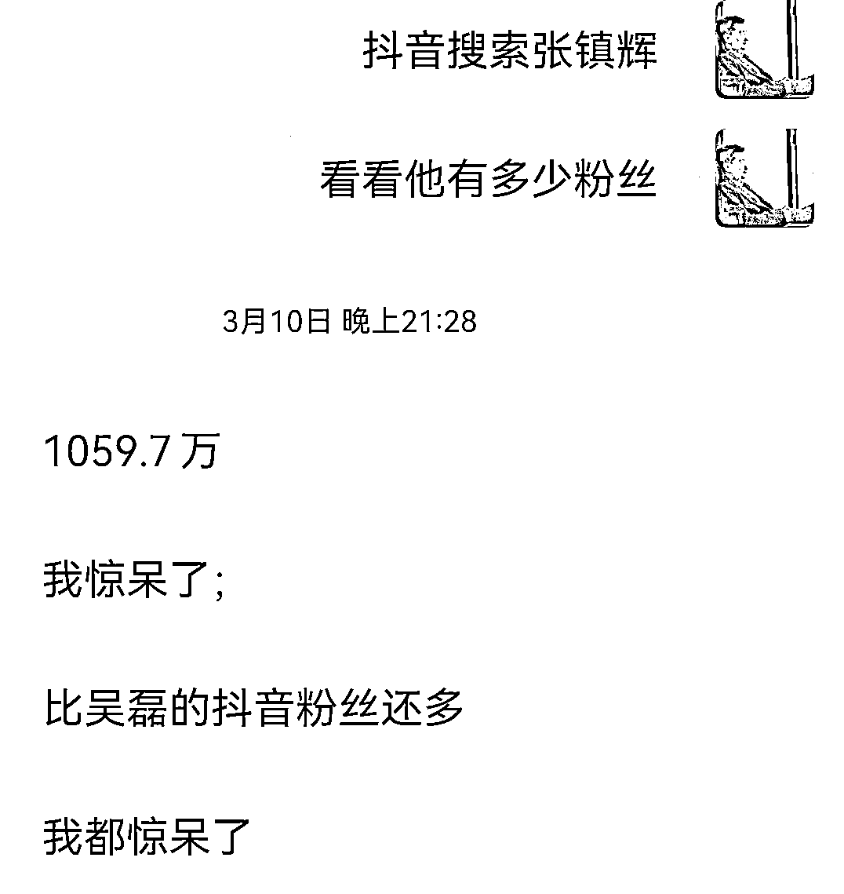
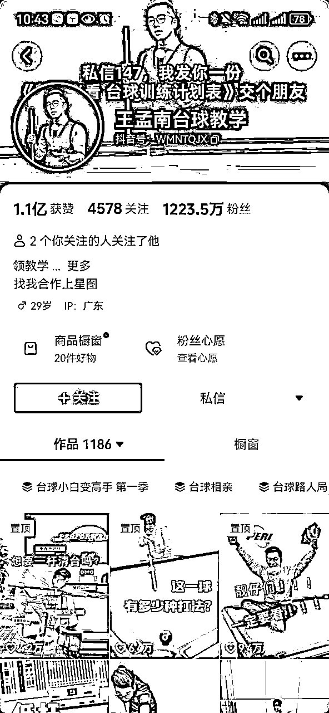
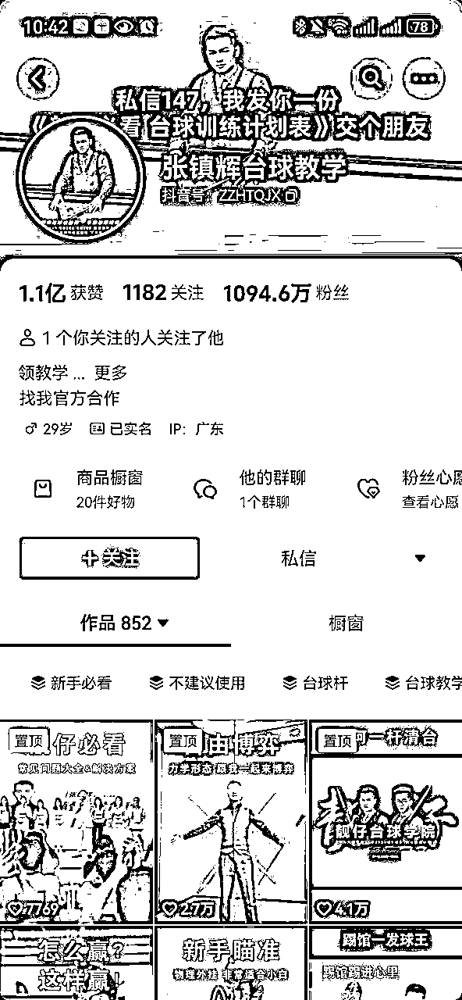
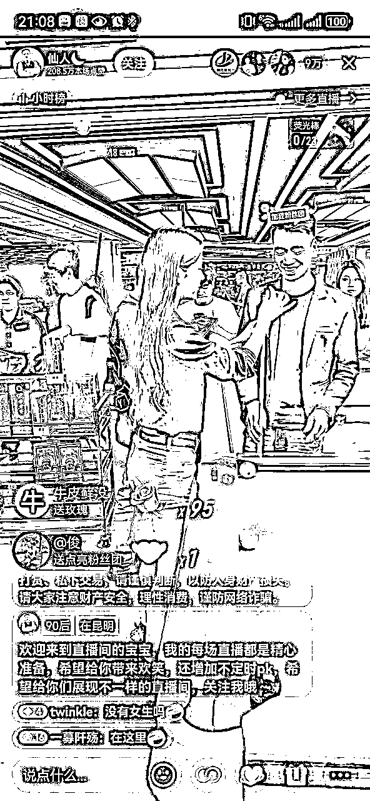
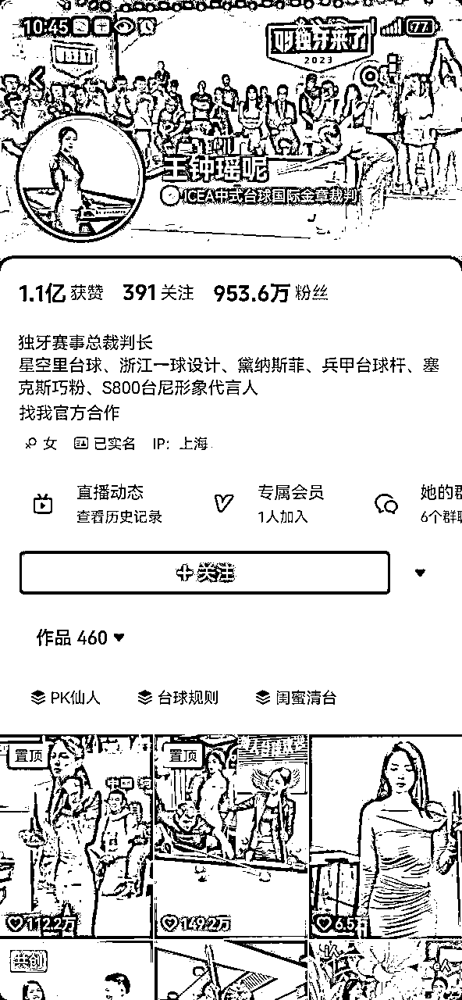
相信大家也都感受到了这两年都已经有太多新开的台球厅了，自己的公司边，家旁边，常吃饭的餐馆旁边，应该是新出现了几家。
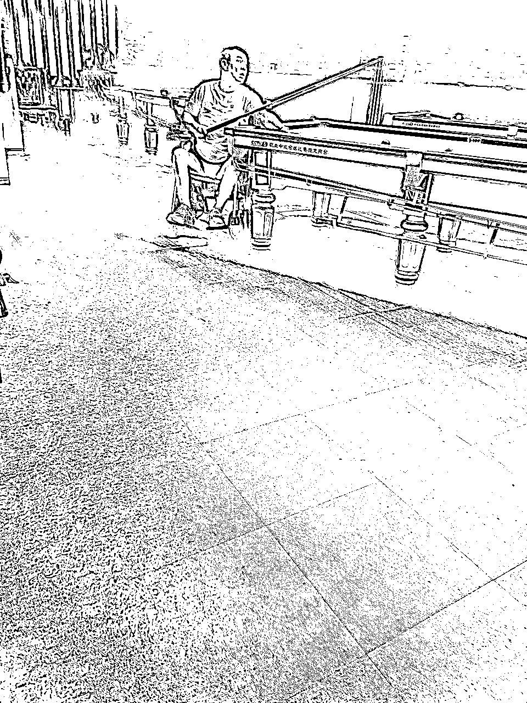
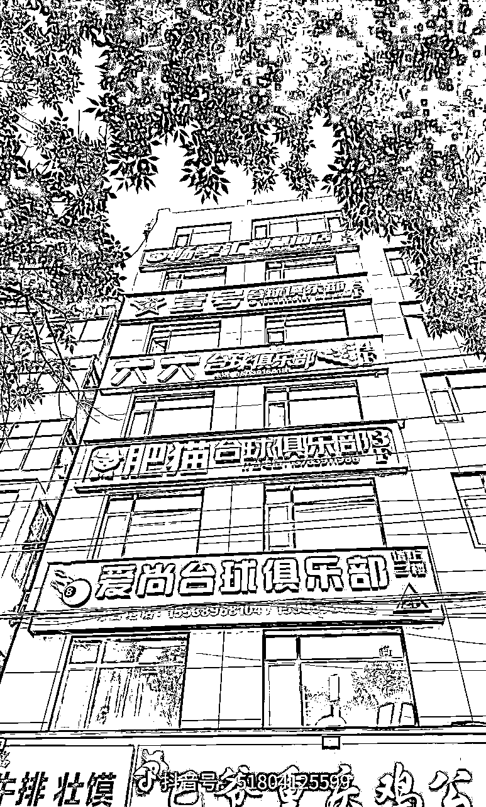
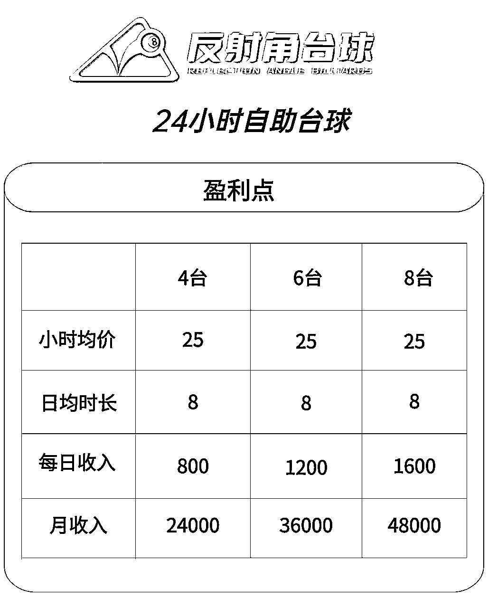
我当时打台球打的也蛮多，很多时候我从6点打到12点，很多球厅都是一直满的，加上上午下午，8个小时，应该是有机会的。
如果做到8个小时，这个基本是需要好的选址，或者比较好的运营的。
如下图，如果6个小时的话，甚至是7个半月回本，这种生意，做酒店的我看下来，就感觉不太可能。
于是我在想，大部分的店周中生意应该差一些，周末的生意好一些，那平均下来按照最少，应该是4个小时；
但是经过测算，就算是一天打4个小时，那么一年多一点也回本了，所以这个项目，能干。
看到这种模型，就感觉很不可思议，真的会有这么好的模型吗？躺着，把钱挣了，怎么听着有点假？
仔细思考之后，这个项目确实满足了3个需求，才产生了这个结果
那就是今年杭州323，刘小排老师讲ai时提到的：旧需求+新技术+软柿子；
台球起源于15世纪的英国，在中国也已经有100年的历史，现在已经有2亿中国人在打台球，这项运动是确定性的旧需求，而且未来100年内都是真需求。
由于新技术的出现，无人模型要比传统模型，要高出30%的利润率，回本周期缩短将近1倍！
传统模型的技术迭代，导致“偷来”高利润率。
现在台球行业的经营者，年龄基本偏大，对于流量获取知之甚少，由此催生了帮商家上架抖音团购这种行业。而在生财许久的大家，对于门店流量获取是有天然的底子在的。涛哥说，“打得过的都是蓝海”，门店的后期壁垒，在于门店低成本获客，以及不断地客户复购，这对生财的各位来说上手是一定更快的。
前两天亦仁大哥发的帖子里有讲，寻找已被验证能赚钱的项目，寻找一年能赚100万的空间的项目。我也深以为然。
这个项目明显是具有的，如果一家店投入10w，那么10家店一年就是100w，而且最牛的是，管理精力大大减少的。
对于开门店来说困难点在于:选址、供应链选择（球桌、球杆）、装修、门店运营、程序问题
那么拆解一下，我可不可以干呢？
思考了之后，虽然还没开始干，但还是挺激动。难不成我真的就是自助台球圣体？
好，现在已经确定要做了，那么第一步是选址吗？不对，下一步一定是市场调研。
实战里都讲，没发过100篇小红书不要说不行，
对于我刚开始干来说，决心把德州的台球厅基本全看完之后，才能干。用数量抵抗概率。
看完了德州，广州，几乎能看的所有的台球厅之后，整体分析，台球厅分3类。
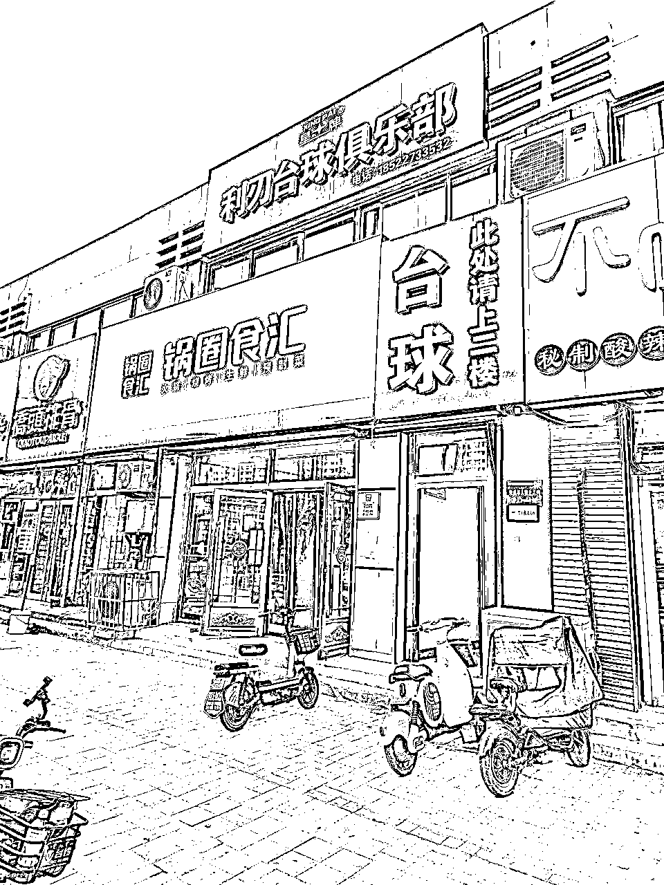
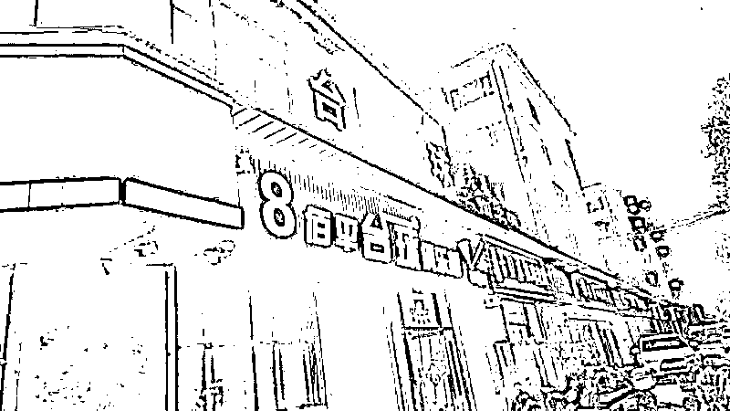
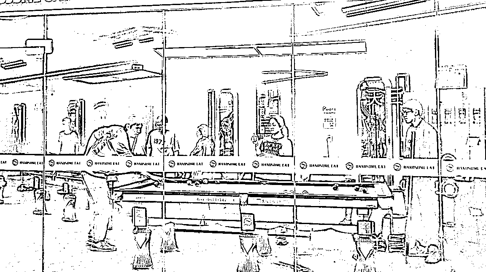
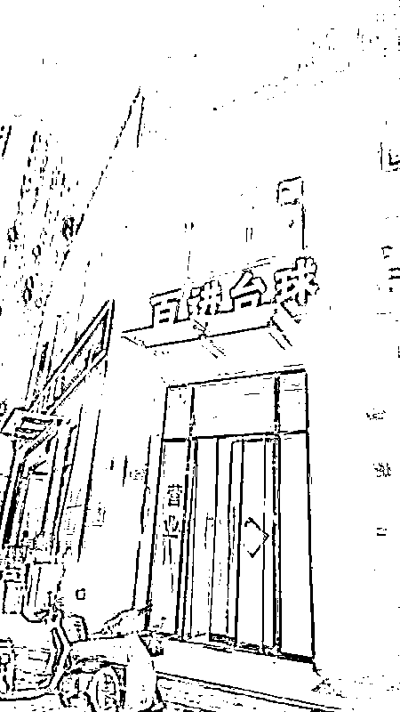
巨大型的商务球房球房看起来很容易干亏本。他们的球台很多都比较贵，有3万一张的毒牙，有5万一张的金腿；所有成本均摊到球台上基本要4-6万。也就是说，35张球台的店，投入要200w左右。这种球房先不说多久能回本，先是投入，就让人望而却步，而考虑关店风险，就更是让人闻风丧胆。
对于传统的夫妻店来说，他们也只能开5-8张球台，而这，马上就要变成自助球房的统治区了，毕竟，5-8张台的店，人工的费用占比还是非常高的。
反观微型球房，还是生意好做，因为球友选取台球厅最重要的几个点是：便利性，打感，宽敞整洁。当一名球友选择球厅时，基本上第一个念头都是：哪个球厅离我最近？而只要是这个球厅的打感还可以，空间宽敞整洁，那么他大概率以后就会一直来这边打，跟有没有前台帮他处理开台和关台，是没有太大的关系的。
那么下一步，选址！
查理芒格讲过：钓鱼的第一条规则是,在有鱼的地方钓鱼。钓鱼的第二条规则是,记住第一条规则。
那我们倒推一下，那我们去捞这些台球爱好者，他们在哪里呢？
答曰：
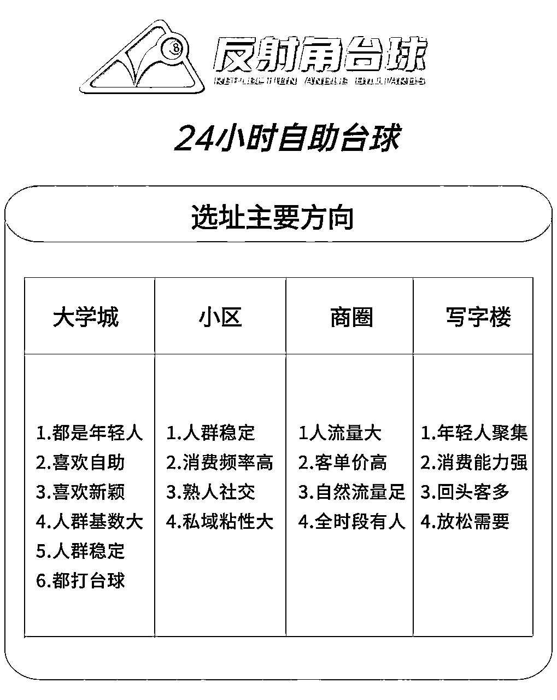
这句流传千古的国际名言，真的不是说说而已，在台球赛道上尤其明显。
尽管有着众多的选址技巧，但是真正做实体，还是要用最原始的办法：走路。
毕竟很多的铺子，只有走，才能找到，才能跟客户找你的球厅时的感觉，相重合。
同时，也还是我们线上的思路，数量能抵抗概率，铺子看的多了，还是能找到好铺子。
确定选址大区域
去58、赶集、安居客看，
找中介
去线下看，
找朋友问
找本地一些本地抖音大中介去问
本来以为故事的脚本是半个月开业，但是故事脚本却停留在了选址：
当时我就说，这个地方，半年之内，一定会有别人开；
结果，一个半月之后，这个地方的球房就由别的老板开业了
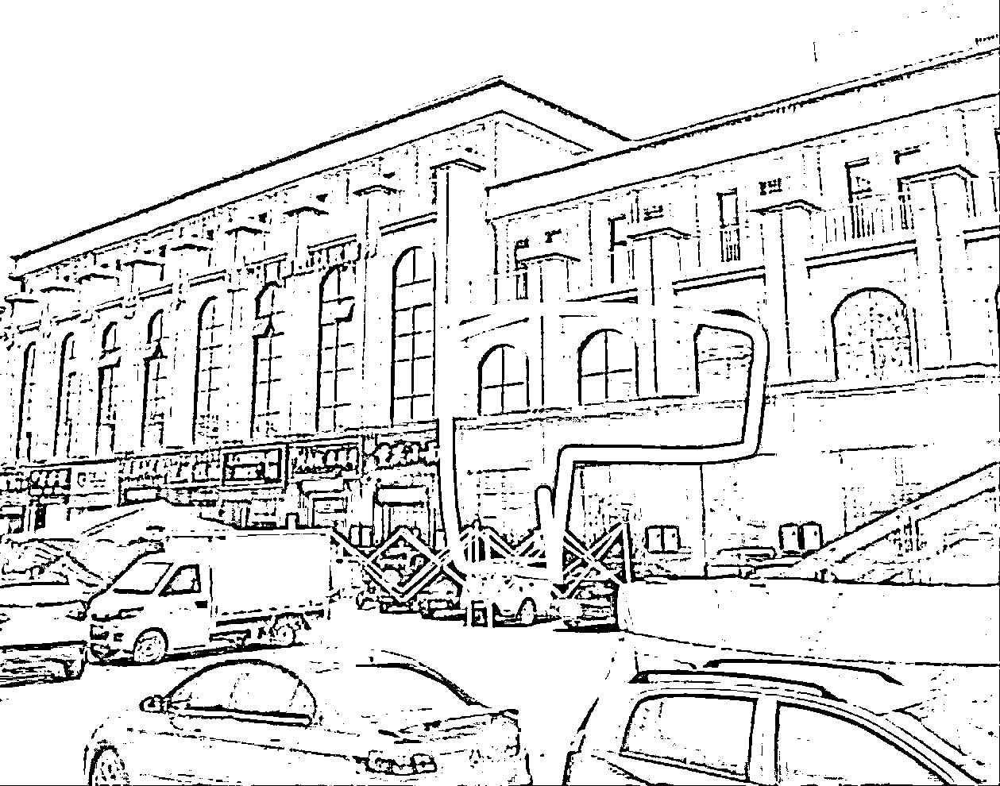
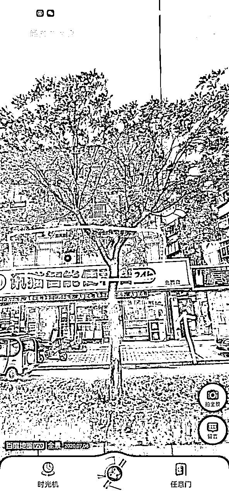
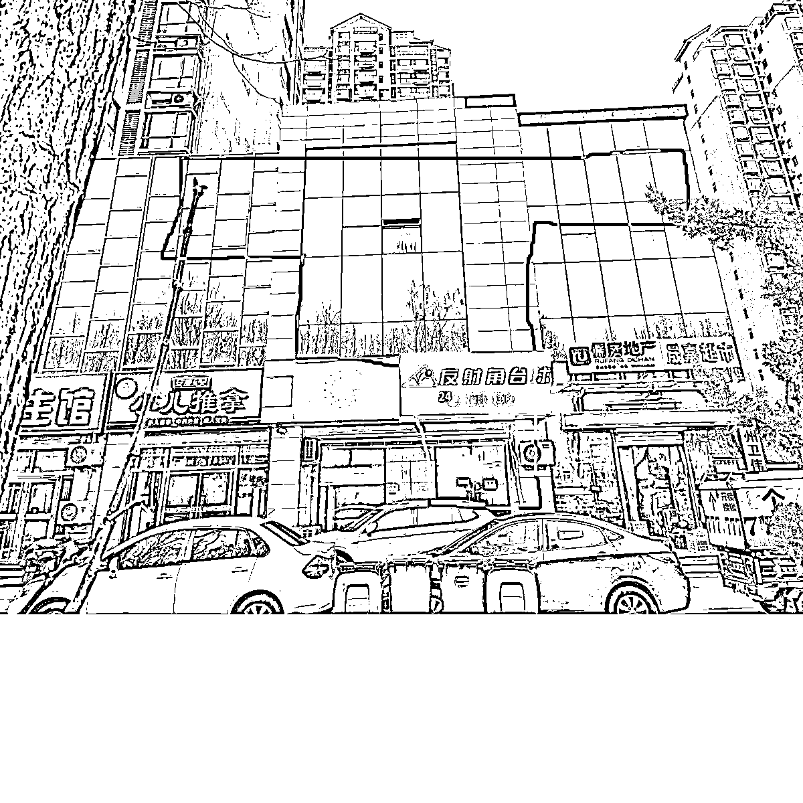
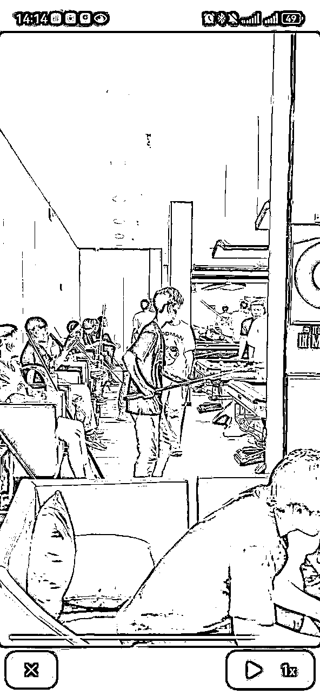
根据严谨严谨在严谨的考虑，还是要蹲守一下选址周边的球厅。
根据我当时的蹲守（天天去打），一般6-11点都全是满的，晚上基本上到3-4点人才会全走掉。
再感叹一句台球厅的模型实在是太清晰了，其实很简单，只要能看到旁边的球厅，有一次全满，就可以开了。
因为自助球厅里，基本1-2个小时就可以回本，而一般客户，都会平均打2小时左右。所以，自己的球厅，只要有一次全满台，那么这天就回本了。而如果隔壁的球厅能够全满 ，那么自己的球厅产品做好，也是可以做到一样的，毕竟台子数少嘛。
调研完之后，心已经不悬着了，完全定下了。
选址不仅是一个技术活，也是一个体力活。
台球厅选址有非常多因素要考虑，细写的话，可能半天都说不完，先简单罗列一下。
看到这里有点担心选不到好铺面了吗？没必要，因为还有个好消息，
那就是，中国有293个市，2844个县级行政区。
根据我们的选址经验，自助台球作为一个能够渗透每条街的新模型，现在还位于行业初期，我们目前也已经找到过40多个a++级铺子，有关选址也有了一整套完整的方法，帮助几十个朋友开了店。
所以，好铺子就像海绵里的水，只要找，总是有的！
台球厅装修的过程呢，基本上就是很简单的。因为一般不牵扯地暖，改卫生间的情况也比较少。
硬装只需要3大项：天、地、顶；软装就更是常规操作
如果原有的吊顶合适，可以保留；
如果没有，可以考虑使用喷漆或不喷漆的原始顶面。
叙利亚风格也是可以的，无人自助球厅主打的就是控预算，把钱都花在增加球友体验感的地方。台球球友最看重的只有3点：便利性，打感（宽敞、整洁、台泥），价格；
而装修事实上排得比较靠后了，经过全国行业内1w多家店的验证，墙面顶面简单刷漆是可以ok的。
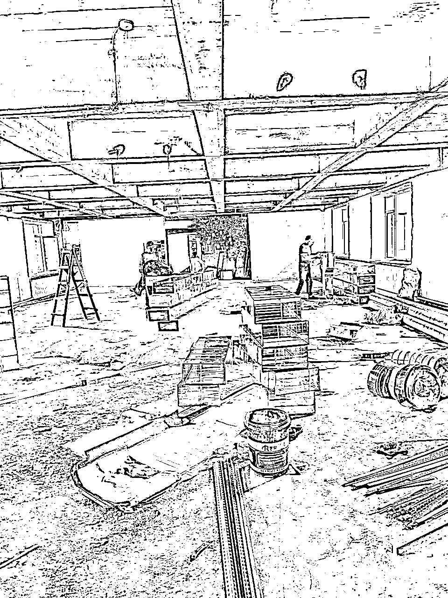
这就更简单了，
无论原来的地面是什么材质，直接铺设地毯是一个简单且有效的解决方案。连工带料一般30-40一平。
曾经有个朋友，他装修的时候，工人向他强推地面自流平，在他强烈心动的时候，还是被我按下了，帮他省了大几千。
重要的事情说三遍，刷漆！刷漆！刷漆！正常大厅不要把钱花给墙板，更不能是瓷砖。
冷知识，其他颜色的漆的价格，跟白漆的价格差不多，所以“刮大白”的钱就能让台球厅比较漂亮。
木工：木工工作主要包括打隔断，这些通常在早期规划阶段就已经确定。
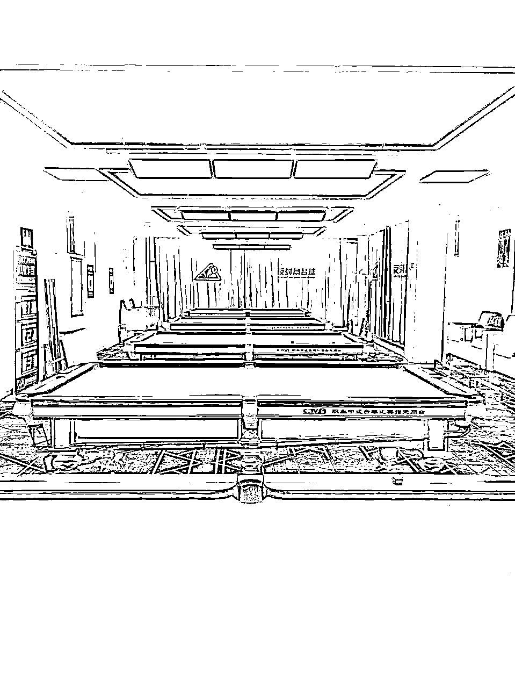
但软装相对简单，锁球柜，自助贩卖机，充电宝、椅子这些大家都自己可以解决，按照开始的布置设计摆放即可
关键是台球桌的搬运和安装，这里有个雷，跟大家讲一下，
选择搬家公司时，确保装修公司前20分钟来到现场来等送球台的货拉拉。
假如说搬家公司比送球台的来的早的话，会同时出现以下两种情况：1、货拉拉向你收等待工时费；2、搬家公司坐地起价，要比原来商议好的更多的钱。
这块儿我们公司当时就有了阿里朋友们加入，来开发智能软硬件，他们都是至少5年阿里程序后端程序员，以及硬件工程师。
既然我们的目标就是百城千店，智能硬件这块我们基本也是不计投入的进行自研，目前的投入也是相当大，但是其他朋友要做自助球厅如果没有软硬件经验的话，自研绝对是不经济的。
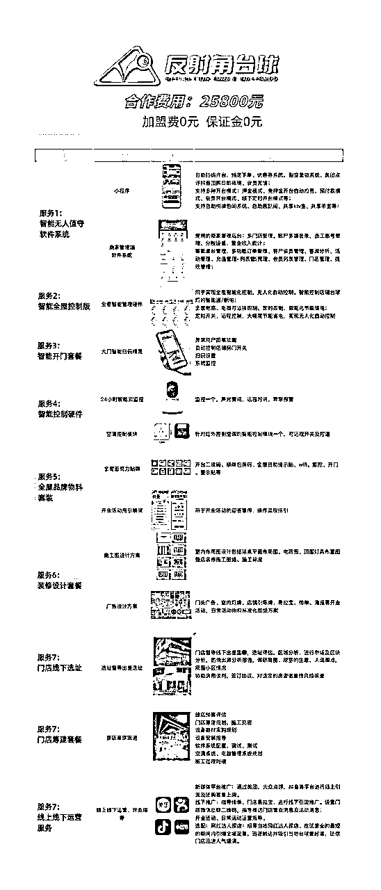
下面这张装修计划表分享给大家，看起来很简单，但好好利用，绝对能省一半脑细胞，能让自己多好几个睡得着的晚上
装修，就是难者不会，会者不难
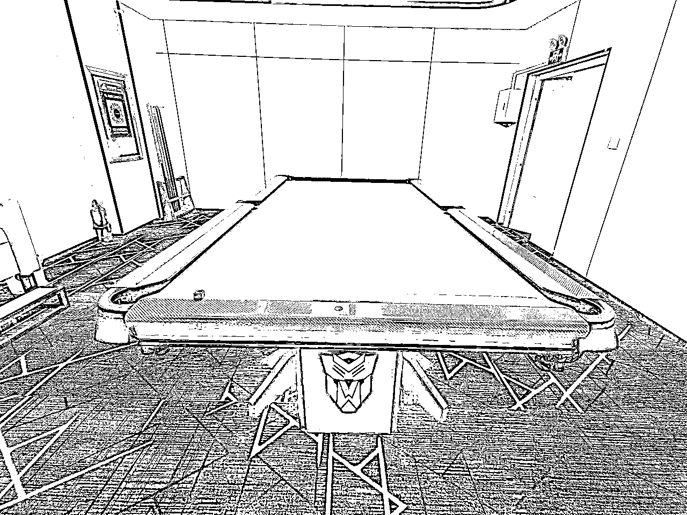
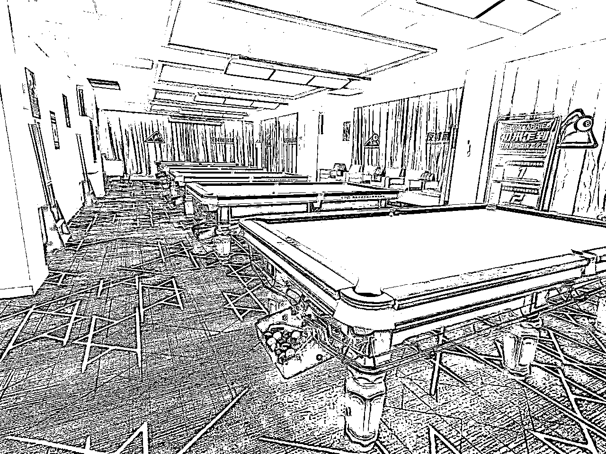
装修完成后，其实产品就已经定了，下一步的目标就是2个：低成本获客+培养消费习惯.
台球厅室具备很强的重复性消费属性，只要有几百个老顾客，养活一个店完全没问题。因此要想办法，让人进店，并且养熟店里的氛围。
这就需要公域+私域的整体方法。这个生财里的内容就有很多，篇幅原因这里不能一一列举，主要写一小部分专属于台球厅这个单店模型的运营活动。
撞倒铁钉即成功
开业比赛的目的是让所有人都能来店里打一次球，本质是在于获客，不在于盈利
开业比赛是否盈利取决于周边竞争情况，报名费用，报名人数，奖金金额。
但是无论如何，都是需要办的，台球爱好者是一个圈，有比赛都是会奔走相告，比较容易一次性打爆。
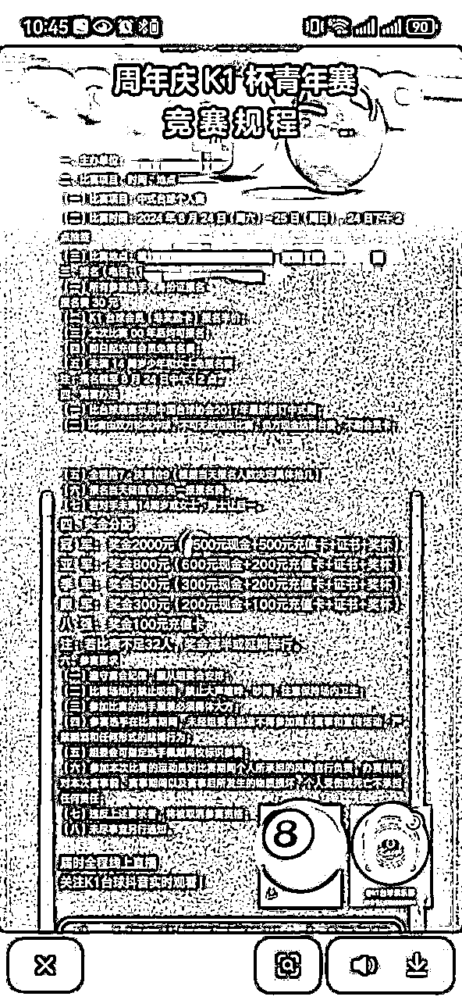
其实真正的流量这块方法还有特别多，日常私域群运营，周边固定人群的引流，和抖音和美团的运营，关于台球厅的实操，以后有时间了再单独写一篇。
单店模型得到验证之后，第二个月就连续开到了第3家了，现在自己已经开了5家店。这里列3家我的店
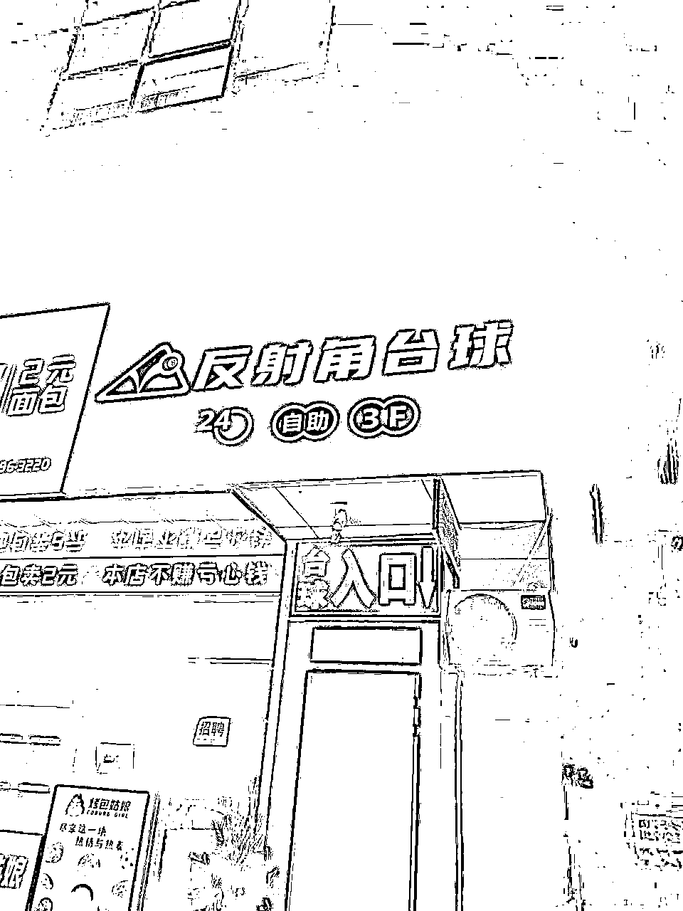
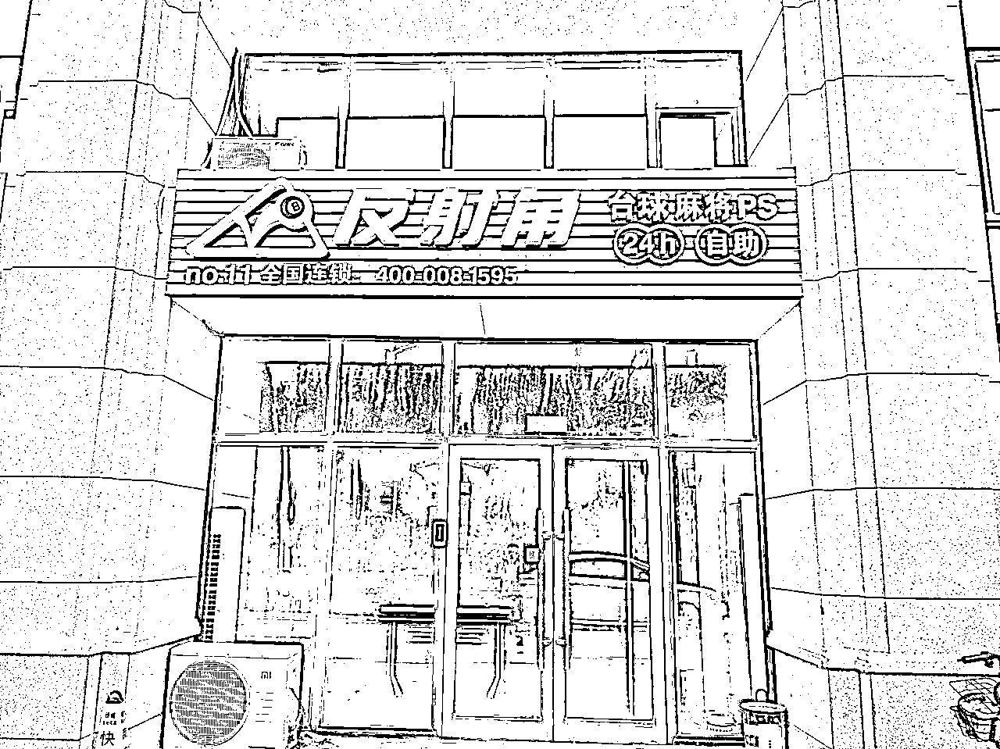
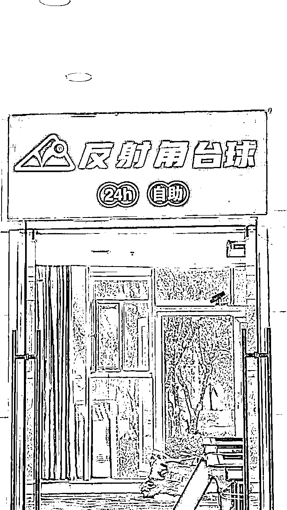
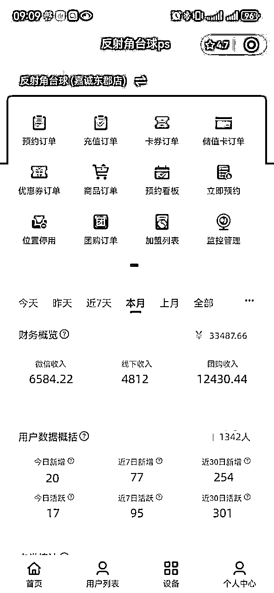
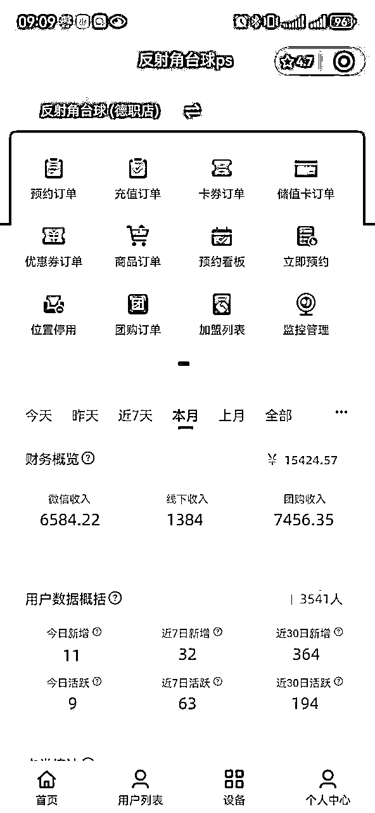
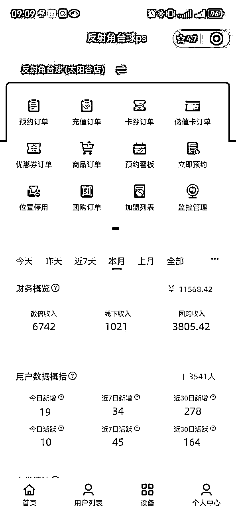
目前我自己开的店里，最快的是3个月就回本了，最慢的店回本周期也在一年之内。当然，朋友开的店里也有1年半回本的。自己也在放大期，现在的态度也是，有合适的店就开，不设上限。
但是全国这个市场太大，预计还有8万家的全国市场容量，我自己是肯定做不完的，
也帮几十个朋友找到了铺子，有些因为离自己的城市太远，就没有自己开。
自己应该是做对了一些事情，不是自夸，也是看一下哪些特质自己以后持续加强，与君共勉。
“钱都是大风刮来的”，有些事情的窗口期就这么一阵子。在德州一年前选铺子，还能找到很好的点位，但是能感受到选址的困难度是在增加的。作为原来在广深的咨询行业和投资行业工作的自己，出来也会有不舍。但是当时出来干，才能抓住宝贵的时间红利。
开店这种事情，与办公室里的工作不一样，一切都在田野里，都在现场。
一切都自己来盯，才能完善每一个细节，最后达成结果。只有先[把手弄脏]才能真正对这个模型知根知底。
自己也是一直深入实体，而且合伙人也是积累了许久的技术经验。所以现在自助台球机会来的时候，自己有早点上车的机会和底气。
前期自己积累的台球厅样本足够多，虽然自己小时候帮别人看过台球厅，但毕竟台球厅已经发展了这么久，所以探店，探铺子都是狂看的。
自己原来一起开酒店的合伙人，就还在一直找酒店，但是每个都是投入很大，回本4年以上的周期。
但是做这种模型，我们测算了下，要达到相同收入，只需要1/3的投入，所以这个是有模型优势的。
大家能看到身边的很多实体倒了又开，但也能看到全国一年的时间开了几万家新店模型，比如零食店以及无人台球、棋牌。也能看到身边的也有10年老店。所以实体里是一直有人在挣钱的。那2024年，选择一个实体项目的标准是什么呢？答曰：无论选择哪种，建议采用1、轻投入，2、真需求，3、轻精力的项目。
诚然，生财有很多低成本创业的办法，但是自助台球在实体里面也属于比较少见的单店模型，因为它具备别的模型不具备的优势：
实体是有他的独特优势的，但是仍然不适用于所有人。那么那些人不适合干呢？
犹豫到底要不要开台球厅，看见别人做的好就想做，看了很多开店经验，又害怕自己做会失败，迟迟无法下决心开始。好的铺面几天就会被占据，必要时一定果断。
虽然现在是无人自助球厅，基本也不用去球厅，所以当副业是完全没问题的，但是不能完全不管不问。
创业本就是需要精打细算的，该花的花该省的省，每一部分的成本把控，最后都会变成利润。毕竟，成本多了一倍，回本周期就长了一倍
千万不要负债开！线上线下，古往今来，国内国外，所有的创业项目都有风险。虽然这个小店10-15万就能开，负债会让动作变形。
正好我也帮助很多朋友开了自助球房，结合身边的球厅老板，我总结了一下，主要有以下几类朋友：
台球有关的营业执照现在全国统计出来有41万家，对半算最起码有20万家传统台球厅，哪怕自助球厅只有传统球厅的百分之五十的份额，那自助球房的天花板最少在十万家。如今中国大概不到2w家自助球房，所以未来5年内还会新增8w家，因此目前完全是自助台球的上半场。
这一点比较虚，但是我还是想说，在本国，娱乐赛道，有没有社会意义，也决定了这个赛道的整体风向。
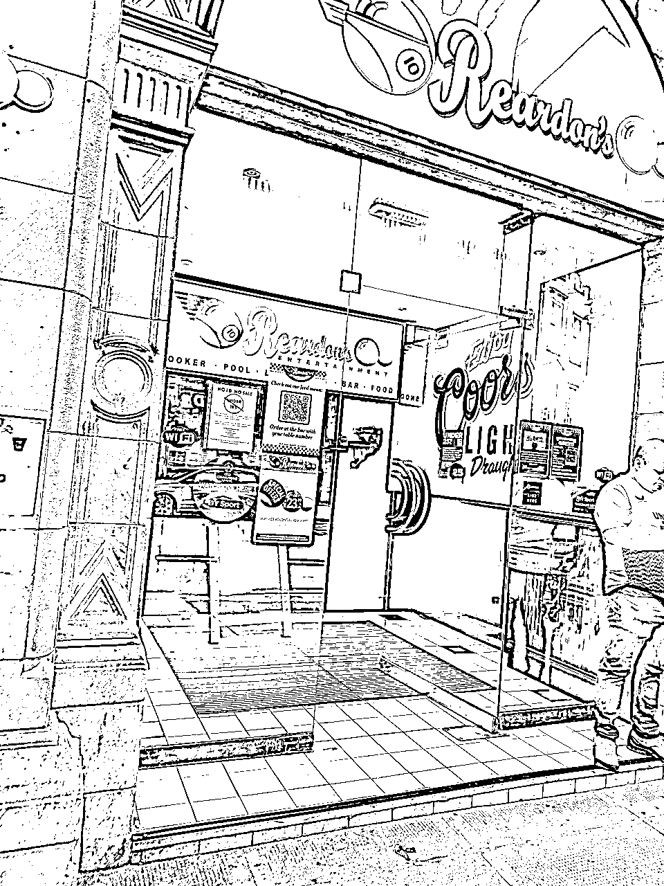
思考之后，这个赛道还是非常绿色的，属于zf支持的体育赛道。
我原来也是在内资的头部人力资源咨询公司工作，但是这个行业都有个特点，就是加班很严重。
有几次晚上加班到2点，听着自己心跳的咚咚声就在想，icu一天花一万，我现在能挣出来吗？
经常早上去上班的时候，就一直在纠结，都说人生是复利，既然我想要的是时间自由和财富自由，那上班能达成我的目标吗？
都说想要10倍增长，打工还有10倍增长的机会吗？
纳瓦尔说把自己的时薪*10，找到为了达成目标最重要的事情去做，那么假如我的时间很宝贵，时薪是1000，我应该做的事情是什么呢，是现在手头的工作吗？
当然，答案都是no，所以还是果断的离开了看起来还行的工作。果然，做了这个决策之后，内耗基本一扫而空。
感谢生财，带我开眼，也记得刚进生财的时候自己睁开眼的时候就想看生财，在生财里大家能量的交互对自己也很重要。
再介绍一遍自己，我是tiger老虎，反射角台球创始人，目前帮几十个朋友开了台球厅，坐标深圳，这篇文章比我想的写的要久，等空了再把上面坑填上，欢迎各位的伙伴关注主页，联系方式也可以咨询鱼丸；
最后还是用生财的一句话来结尾，出来混最重要的是什么呢？是先出来！
希望跟大家在生财，一起慢慢变富。